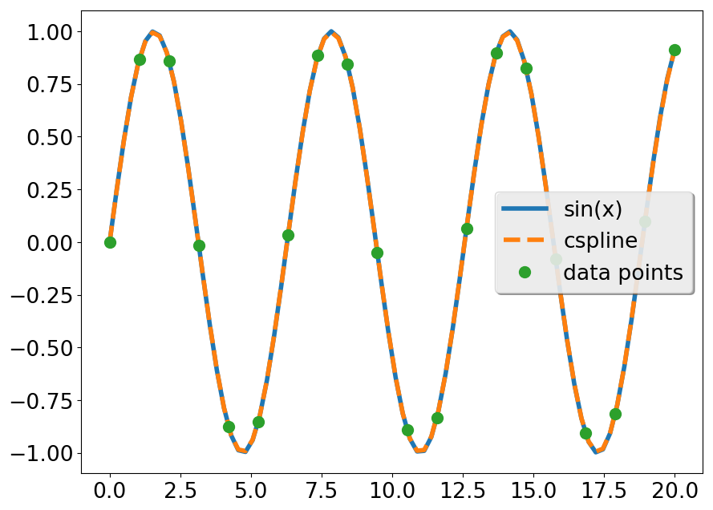
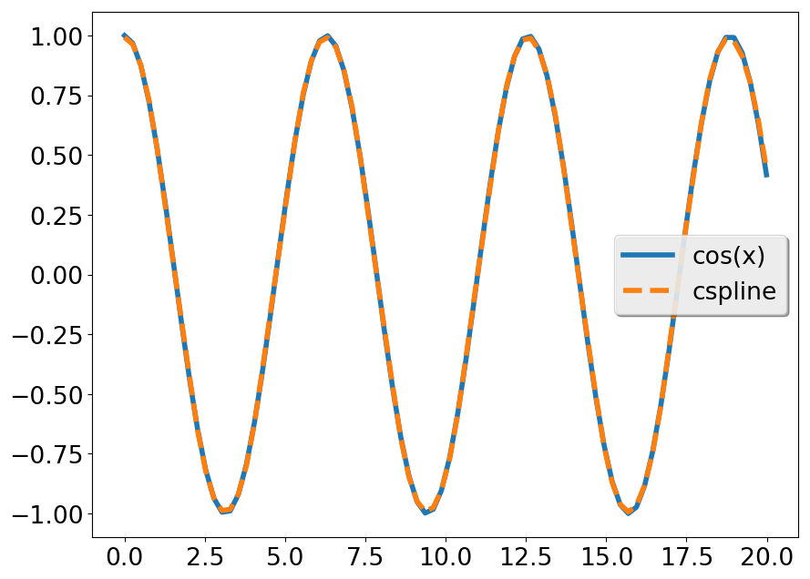
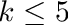

Numerical (Modern) Fortran. Library for Simple Numerical computing
Submodule interpolate
This submodule has several related features:
A module polynomial with basic features to work with polynomials
A module fitpack to performe interpolation/fitting using an expansion in B-splines
A module csplines to work with cubic splines, represented as piecewise cubic polynomials
CubicSplines
CubicSplines gives a frame to interpolate data using Cubic Splines. It uses an internal representation as a list of piece-wise cubic polynomials. It has a functional interface and an Object oriented interface. Both modes of use are equivalent and they rely on the same implementation.
CubicSpline Object and methods
The use of the object oriented CubicSplines is very convenient, as it is illustrated in the following example
Note that in order to get the interpolated values only three lines are relevant:
line 3: where the object is declared.
line 20: where the interpolation to the data is determined.
line 22: where the interpolated values are obtained.
The evaluation of the data in the new points results in:

while the derivative gives

Note
that both interpolations are particularly good at both ends because we gave good values for the second derivative.
CubicSpline Functions and subroutines
Interpolation using cubic splines may be accomplished in a very similar manner using the functional interface to CubicSplines. Its use is very similar to the object oriented aproach, as shown in the translation of the above example to this interface
37 print "(A,f8.6)", "Value of the function at 1.5 = ", csplev(1.5_dp, csp)
38 print "(A,f8.6)", "Value of first derivative at 1.5 = ", csplevder(1.5_dp, csp)
39 print "(A,f8.6)", "Value of integral from 0 to 1.5 = ", csplint(0._dp, 1.5_dp, csp)
40end program cubic_splines_fp
Fitpack
This module allows to either fit or interpolate data using an expansion in B-splinebasis of order . The implementation is based in the FITPACK set of routines by P. Diercxx.
Use of splrep() with splev()
The first example illustrates how to use B-Splines to interpolate a function y=f(x) from a few data points:
program ex_splprep
USE numfor, only: dp, zero, m_pi, str, linspace, save_array
USE numfor, only: univspline, splrep, splev
implicit none
integer, parameter :: N = 6
integer, parameter :: Nnew = 29
real(dp), dimension(N) :: x
real(dp), dimension(N) :: y
real(dp), dimension(Nnew) :: xnew
real(dp), dimension(Nnew) :: ynew
character(len=:), allocatable :: header
character(len=:), allocatable :: fname
real(dp) :: s
type(UnivSpline) :: tck
! Create data
s = 0._dp
x = linspace(zero, m_pi, n)
y = sin(x)
xnew = linspace(zero, m_pi, nnew)
! After setting data in x
! interpolate: (step one) Create interpolation and parameters u
 1.9.7
1.9.7